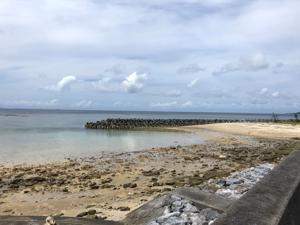
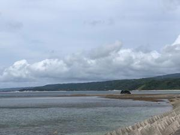
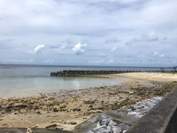
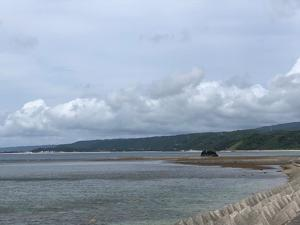
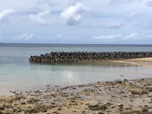

うるがいの話 ある日
最新: 中潮【うるがいの話 ある日】とは 一日だけのプログです
『うるがいの話』の最新一日だけのプログで、通信料が少なく経済的だ。カニの画像をクリックすると全ての日付が載る『うるがいの話』サイトを表示します
|
|
【うるがいの話】 うるがい(ｳﾙｶﾞｲ urugai)とは、『もずくがに』の名前でとても大きくなります。 |
|---|---|
|
|
【カミマヤーの話】 猫のことを方言でマヤーといいます。カミマヤー（kamimayaa）とは、神の猫のことです。 |
|
【たながぁの音楽】 たながぁ（ﾀﾅｶﾞｰ tanagaa）とは手長えびのことで、何種類かあり大きいのは車 エビぐらいになります。 |

|
【ぶながぁの話】 ぶながぁ(ﾌﾞﾅｶﾞｰ bunagaa)とは、赤い髪の毛、赤い身体、そして身長は１ｍ２０ｃｍ ぐらい、川の蟹を食べているの目撃された。場所は沖縄県国頭郡大宜味村のと ある村僕の隣近所に住んでいる爺さんから、聞いた話です。 |
|
|
【ギーマの話】 ギーマ(giima)とは、山原の里山に咲くスズランに似た、 花を付けます。実は食べられます、 気が付くと口の周りが紫になっています。 |
2022年05月20日 (金）中潮
16:48
 



設立昭和４５年１月１５日、ウイ門中墓に書いてあった。私が小学生の頃、大
工の叔父さん（母親の兄）に墓づくりを手伝いさせられた。そうか、あれから
５２年も過ぎたんだ。その叔父さんの９７才になる妻なる叔母さんの納骨に立
ち会った。喪主である従姉に自然死かと尋ねると、１０日前に気分が悪いと尋
ねてきた民生委員に言ったので救急車で病院へ運ばれたと、一時期は良くなっ
たがと答えた。そうか、あれ高ニーニー（本来であれば筆頭喪主で仕切るベク
長男がいないので）はと尋ねると、・・・・、突っ込むことをやめる。ん、私
にギターを教えれてくれた同級生は、この門中墓に収められるのかと儀式の間
に考えてしまった。私の母の妹（痴呆になっている）家族が来ていたが、同じ
日の東村の亡くなった人のため、国頭村の火葬場から間に合わせたと言ってい
た。ン？、もしかして東村には公営斎場が無いのか（ネットを調べると無いも
よう）。亡くなった叔母さんには、去年のお歳暮に会って話したのである意味
良かった。久しぶりに山原に行くが、干上がっている海が綺麗だった。辺士名
高校向かいの浅瀬は、潮干狩りの場所だった。大潮かなと思ったが、中潮で干
潮時刻は１５：３４だった。これで、お中元やお歳暮を持っていく親戚がいな
くなってしまった。今日は、一日中雨が降っているが、昨日雨は降らなくて良
かった。

１６時４３分 ビットコインの総資産 ￥１１、２２１↑